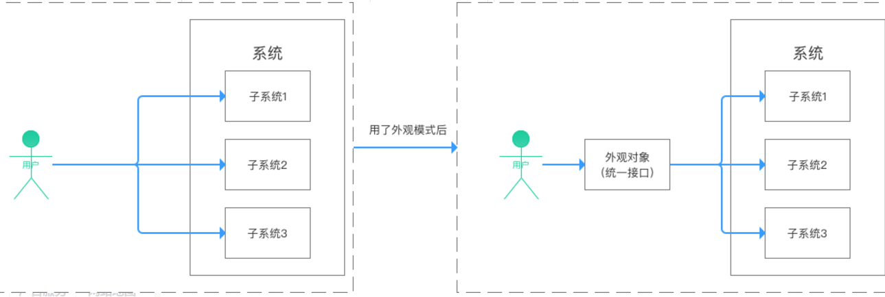

生活是具体的
概述
本周我在开发的时候，在补mysql主备搭建测试的时候，发现部分的代码兼容性不好，agent端代码使用的是springboot来管理的，在实际开发中是跑在VM上的，而测试的代码不能在本地运行，因为有些shell命名需要通过ssh发送到远程虚拟机上执行，而ssh连接这部分代码不太适合实际运行环境和开发环境都能测试这个要求，所以动手重构sshUtils代码。
Facade设计模式
Facade设计模式：定义了一个高层、统一的接口，外部与通过这个统一的接口对子系统中的一群接口进行访问。通过创建一个统一的类，用来包装子系统中一个或多个复杂的类，客户端可以通过调用外观类的方法来调用内部子系统中所有方法。

使用Facade设计模式原因
1.实现客户类与子系统类的松耦合
2.降低原有系统的复杂度
3.提高了客户端使用的便捷性，使得客户端无须关心子系统的工作细节，通过外观角色即可调用相关功能。
引入外观角色之后，用户只需要与外观角色交互；
用户与子系统之间的复杂逻辑关系由外观角色来实现
第一次重构
首先想到的不是通过设计模式来解决，而是直接在sshUtils中修改部分代码，把sshUtils中没有的功能添加进去，并创建一个类，ip地址默认是127.0.0.1，测试的代码就可以动态的修改这个ip，而线上环境就使用默认ip。这样就可以完美的解决ip不同的情况。
可是我后面遇到了两个问题：
第一：sshUtils中放入了业务代码
第二：如果是oracle也需要使用这个Utils，怎么办，无法复用。
工具类和管理类的区别
工具类：作为系统中通用的工具，不会牵扯到业务代码，也就是说工具类是无状态的
管理类：作用某一个场景下管理工具，里面会包含很多的业务代码，也就是说管理类是有状态的
Facade模式的使用
通过facade设计模式来解决上述问题，因为都是ssh操作，统一写一个外观模式，可以很好的统筹连接ssh的操作。牵扯到业务的功能代码，可以设计针对某一大业务的Impl。
facadeSsh最终代码如下：
1 | public interface SshFacade { |
针对mysql业务的代码，首先想到的是继承SshFacade的实现类来设计，最后通过同事的指点，发现如果使用继承便会违反依赖倒置原则。如下代码所示：
1 |
|
这里直接继承SshFacadeImpl，这样会导致高层次模块依赖了低层次模块，高层模块就是调用端，低层模块就是具体实现类。通过继承的方式MySqlSshFacadeImpl便无法继承其他的功能模块，而且当SshFacade接口发生改变的时候，对MySQLSshFacade不在适用的时候，便要修改MySQL这部分的代码。如果通过接口的方式，则不会这些这部分的问题。
六大设计原则
单一职责（Single Responsibility），类或者对象最好是只有单一职责，在程序设计中如果发现某个类承担着多种义务，可以考虑进行拆分。
开关原则（Open-Close, Open for extension, close for modification），设计要对扩展开放，对修改关闭。换句话说，程序设计应保证平滑的扩展性，尽量避免因为新增同类功能而修改已有实现，这样可以少产出些回归（regression）问题。
里氏替换（Liskov Substitution），这是面向对象的基本要素之一，进行继承关系抽象时，凡是可以用父类或者基类的地方，都可以用子类替换。
接口隔离（Interface Segregation），我们在进行类和接口设计时，如果在一个接口里定义了太多方法，其子类很可能面临两难，就是只有部分方法对它是有意义的，这就破坏了程序的内聚性。
对于这种情况，可以通过拆分成功能单一的多个接口，将行为进行解耦。在未来维护中，如果某个接口设计有变，不会对使用其他接口的子类构成影响。依赖反转（Dependency Inversion），或者
称依赖倒置实体应该依赖于抽象而不是实现。也就是说高层次模块，不应该依赖于低层次模块，而是应该基于抽象。实践这一原则是保证产品代码之间适当耦合度的法宝。迪米特法则（Law of Demeter），类间解耦，一个类对自己依赖的类知道的越少越好。自从我们接触编程开始，就知道了软件编程的总的原则：低耦合，高内聚。无论是面向过程编程还是面向对象编程，只有使各个模块之间的耦合尽量的低，才能提高代码的复用率。
一句话概括: 单一职责原则告诉我们实现类要职责单一；里氏替换原则告诉我们不要破坏继承体系；依赖倒置原则告诉我们要面向接口编程；接口隔离原则告诉我们在设计接口的时候要精简单一；迪米特法则告诉我们要降低耦合。而开闭原则是总纲，他告诉我们要对扩展开放，对修改关闭。
注意：现代语言发展很快，很多时候并不是完全准守前面的原则。